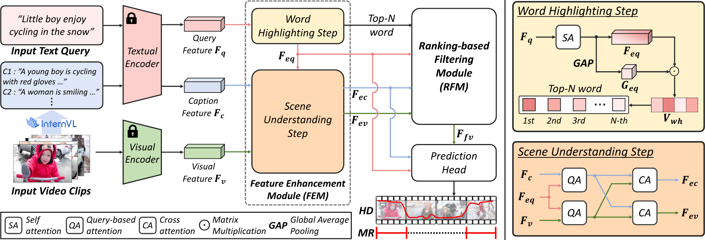
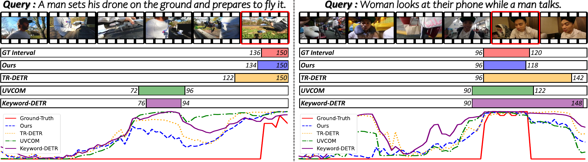

Abstract
Video moment retrieval (MR) and highlight detection (HD) with natural language queries aim to localize relevant moments and key highlights in video clips. However, existing methods overlook the importance of individual words, treating the entire text query and video clips as a black box, which hinders contextual understanding.
We propose a novel approach that enables fine-grained clip filtering by identifying and prioritizing important words in the query. Our method integrates image-text scene understanding through Multimodal Large Language Models (MLLMs) and enhances the semantic understanding of video clips. We introduce a feature enhancement module (FEM) to capture important words from the query and a ranking-based filtering module (RFM) to iteratively refine video clips based on their relevance to these important words. Extensive experiments demonstrate that our approach significantly outperforms existing state-of-the-art methods, achieving superior performance in both MR and HD tasks.
Read the query the way people do
Given a query such as “Man is holding a duck on the bus”, a person first picks out the words that matter (man, duck, bus, hold) and ranks them, then looks for the clips that match those words in order.
Existing MR/HD models skip both steps. They encode the whole query and every clip at once, so no word is treated as more important than another, and they rely on raw visual features with little understanding of what is happening in the scene.
Our framework does both: it (a) finds and prioritizes the important words in the query and (b) filters video clips by that priority, using MLLM-generated clip captions to understand each scene.

Method
Query and video features come from frozen text and visual encoders. InternVL2 writes a caption for every clip, which is encoded as a third stream. The three streams pass through the feature enhancement module, then the ranking-based filtering module, and finally a transformer encoder-decoder prediction head for MR and HD.

Feature Enhancement Module
Word highlighting. Self-attention over the query gives enhanced query features. Each word is then compared with the globally pooled sentence feature, producing a word-highlighted vector that scores how important each word is. No word-level labels are needed.
Scene understanding. Video–query and caption–query similarities are computed and fused through cross-attention between the visual and caption streams, so each clip carries both what it looks like and what it means.
Ranking-based Filtering Module
Query–video and query–caption similarity matrices are blended with a learnable weight. Taking the top-N words from the word-highlighted vector in rank order, the module reweights the clip features by each word’s similarity column with a residual connection.
After N iterations, clips unrelated to the important words are suppressed and the relevant ones stand out. A modal alignment loss (query–video, query–clip, caption–clip) keeps the three streams in a shared space.

Results
On the QVHighlights test set, our method leads on every metric with video-only features, and on most metrics when audio is added. It also reaches the best average on TVSum highlight detection (89.2 top-5 mAP, against 88.7 for Keyword-DETR).
QVHighlights (test)
| Moment retrieval | Highlight detection | ||||||
|---|---|---|---|---|---|---|---|
| Method | R1@0.5 | R1@0.7 | mAP@0.5 | mAP@0.75 | mAP avg | mAP | HIT@1 |
| Video only | |||||||
| Moment-DETRNeurIPS’21 | 52.89 | 33.02 | 54.82 | 29.40 | 30.73 | 35.69 | 55.60 |
| QD-DETRCVPR’23 | 62.40 | 44.98 | 62.52 | 39.88 | 39.86 | 38.94 | 62.40 |
| UniVTGICCV’23 | 58.86 | 40.86 | 57.60 | 35.59 | 35.47 | 38.20 | 60.96 |
| TR-DETRAAAI’24 | 64.66 | 48.96 | 63.98 | 43.73 | 42.62 | 39.91 | 63.42 |
| UVCOMCVPR’24 | 63.55 | 47.47 | 63.37 | 42.67 | 43.18 | 39.74 | 64.20 |
| Keyword-DETRAAAI’25 | 66.86 | 51.23 | 67.73 | 46.24 | 45.69 | 40.94 | 64.79 |
| Ours | 68.09 | 52.20 | 67.81 | 46.74 | 46.54 | 42.24 | 68.22 |
| Video + audio | |||||||
| UMTCVPR’22 | 56.23 | 41.18 | 53.38 | 37.01 | 36.12 | 38.18 | 59.99 |
| QD-DETRCVPR’23 | 63.06 | 45.10 | 63.04 | 40.10 | 40.19 | 39.04 | 62.87 |
| TR-DETRAAAI’24 | 65.05 | 47.67 | 64.87 | 42.98 | 43.10 | 39.90 | 63.88 |
| UVCOMCVPR’24 | 63.81 | 48.70 | 64.47 | 44.01 | 43.27 | 39.79 | 64.79 |
| Keyword-DETRAAAI’25 | 67.77 | 50.52 | 68.30 | 45.88 | 45.52 | 41.15 | 65.82 |
| Ours | 68.87 | 52.27 | 68.09 | 46.55 | 46.23 | 42.36 | 69.78 |
Charades-STA (moment retrieval)
| Method | R1@0.5 | R1@0.7 |
|---|---|---|
| VGG features | ||
| UMT† | 48.31 | 29.25 |
| QD-DETR | 52.77 | 31.13 |
| TR-DETR | 53.47 | 30.81 |
| TaskWeave | 56.51 | 33.66 |
| Keyword-DETR | 54.89 | 31.97 |
| Ours | 61.51 | 37.58 |
| SlowFast + CLIP features | ||
| QD-DETR | 57.31 | 32.55 |
| UniVTG | 58.01 | 35.65 |
| TR-DETR | 57.61 | 33.52 |
| UVCOM | 59.25 | 36.64 |
| Keyword-DETR | 61.08 | 37.89 |
| Ours | 60.97 | 38.52 |
Filtering iterations (QVHighlights val)
| N | R1@0.5 | R1@0.7 | mAP avg | HD mAP | HIT@1 |
|---|---|---|---|---|---|
| 0 | 69.16 | 53.81 | 46.81 | 42.86 | 69.61 |
| 1 | 69.48 | 54.13 | 47.10 | 42.91 | 70.06 |
| 3 | 69.74 | 54.45 | 47.30 | 42.98 | 70.90 |
| 5 | 70.00 | 55.68 | 48.14 | 43.24 | 71.23 |
| 7 | 70.00 | 53.87 | 47.09 | 42.76 | 69.29 |
Ablation (QVHighlights val)
| Captions | FEM | RFM | R1@0.5 | R1@0.7 | mAP avg | HD mAP | HIT@1 |
|---|---|---|---|---|---|---|---|
| – | – | – | 66.13 | 49.74 | 43.24 | 40.11 | 64.77 |
| – | ✓ | – | 66.32 | 49.81 | 43.53 | 40.80 | 65.10 |
| – | – | ✓ | 67.55 | 49.61 | 44.38 | 41.29 | 65.81 |
| – | ✓ | ✓ | 69.42 | 51.81 | 45.56 | 41.32 | 66.06 |
| ✓ | – | – | 69.03 | 52.71 | 46.34 | 42.23 | 67.94 |
| ✓ | ✓ | – | 69.16 | 53.81 | 46.81 | 42.86 | 69.61 |
| ✓ | – | ✓ | 69.42 | 53.87 | 47.43 | 42.29 | 68.00 |
| ✓ | ✓ | ✓ | 70.00 | 55.68 | 48.14 | 43.24 | 71.23 |
Qualitative results


Which words does the model rank first?
For “Man leans his head out a truck window”, the model ranks Man, leans, head, window, and out highest. It favors words tied to actions and objects, or strongly connected to the rest of the sentence, which are the words that help retrieve the right clips.
BibTeX
@inproceedings{lee2026see,
title = {See, Rank, and Filter: Important Word-Aware Clip Filtering via Scene Understanding for Moment Retrieval and Highlight Detection},
author = {Lee, YuEun and Kim, Jung Uk},
booktitle = {Proceedings of the AAAI Conference on Artificial Intelligence},
volume = {40},
number = {8},
pages = {5936--5944},
year = {2026}
}